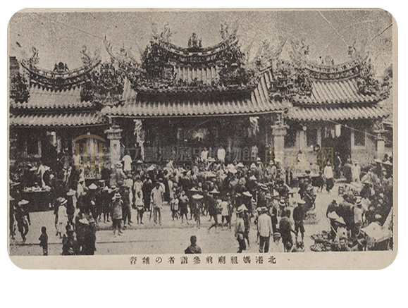
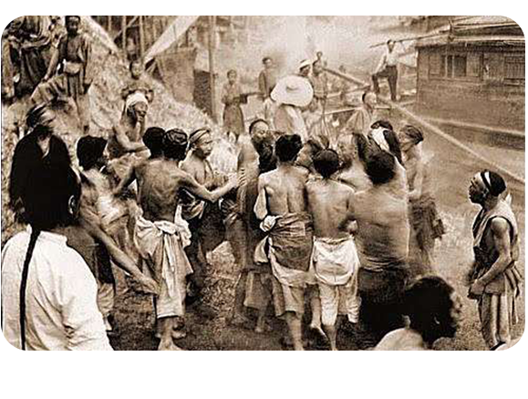

台灣寺廟起源
清領時期統治臺灣時，漳、泉居民才大量渡海來臺。當時臺灣海峽風浪很大， 所以移民們都攜帶神像、香火、香灰作為護身符，其中以媽祖神像最多，因為媽祖是海神， 所以神像常被安置在船上，以祈求她保護航海安全。 而在開墾初期，由於野地醫藥不發達，只要有疾病流行，就會造成許多人死亡，所以人們都信仰瘟疫之神「王爺」。 王爺又稱「千歲爺」、「府千歲」，有很多不同的姓氏，傳說王爺可以去除疾病，所以人們相信他可以庇佑身體健康。 到了後期，村落漸漸繁榮信徒就興建各種寺廟，來感謝神的保佑所以媽祖和王爺也就成了臺灣寺廟供奉神明的二大系統。 在當時，寺廟不僅是居民的信仰中心，而且兼具教化、救濟等功能。
-
廣澤尊王
廣澤尊王又稱保安廣澤尊王、郭聖王、翹腳仔神與聖王公，職責主要是袪除惡鬼與驅邪， 也是孩子的守護神與泉州移民是守護神。全台廣澤尊王廟約有80多間。
-
濟公
濟公又稱濟癲和尚、濟公活佛，俗名李修緣 ，不喜誦經打坐，不戒酒肉，穿著破衣破鞋手持扇。 濟公常常幫助世人、醫治他人、懲罰除惡，替人們打抱不平，從此稱濟公為濟公活佛。
-
媽祖
媽祖生前家中排行老么，聰慧過人、沈默寡言，是一位釋道兼修的仙姑，並為人占卜禍福為事， 傳言她常以一位「穿紅衣的長髮素顏美女形象」在海浪風湧時顯靈、保祐平安航行， 沿海船員與漁民對她的崇拜逐漸形成信仰。
-
地府陰公
地府陰公廟主祀地府陰公，同祀地藏菩薩、福德正神。農曆十月廿三日會舉行大拜拜， 居民會請人演十幾天布袋戲慶祝。 地方耆老說此神很靈驗，在大家樂賭風盛行時廟前踴躍， 曾有人一把捐新台幣10萬元還願、添油香。
-
百姓公
百姓公廟的祭祀習俗起源於早期自中國移居來台灣的移民，有些移民孤身一人來到臺灣後因水土不服、天災、械鬥等原因死亡後， 因沒有家眷可為死者安葬奉祀，以致屍骨遺骸落散四處。居民為了安心，便將這些無主屍骨埋葬， 且募資建一個小廟供俸，稱作「百姓公」。
-
有應公
有應公是有應公廟所祭祀的對象，祂們是沒有子孫供奉、不知姓名的枯骨，由於清代至台灣拓墾之移民，或因水土不服， 或疫病、械鬥等各種因素客死他鄉，死後草草埋葬，日久容易曝露，墳墓經風雨沖擊損壞，枯骨四散各處，人見之恐懼，害怕無緣鬼魂作祟而建祠奉祀。
中華文化在臺灣的傳承與發展，更甚於大陸民俗表演的節目，因為信仰的關係，臺灣在宗教信仰上是自然自在的， 換言之，更具中華文化的精髓所在，以及來自傳統文化的承繼，精確道地是項珍貴的寶藏。
文化變質
「宮廟」兩個字或許不復以往神聖，反而代表黑道、角頭勢力，甚至被懷疑為台灣毒瘤與阻礙台灣進步的絆腳石。 然而，廟宇祭祀慶典曾經是日本人深深著迷的在地文化，甚至成為許多外國觀光客熱愛一睹風采的「台灣味」，究竟宮廟是什麼時候開始變質的？ 儀式慶典就是構成一個國家或民族文化很重要的部分， 大家看看希臘的神殿、日本的神社、泰國的佛寺、義大利的教堂、墨西哥的亡靈節、紐西 蘭的毛利舞， 人類文明本身就是從宗教信仰的儀式開始發展。 以前臺灣的宮廟信仰根本不是現在這麼俗艷和扭曲， 建築都相當講究， 用色質樸、典雅、精美。 去除掉後期變質的黑道介入、宗教斂財、情色俗化， 臺灣人的文化其實就如日本時代所看到的， 是我們自己民族的文化底蘊。 臺灣文化受到戰後部份去臺灣化的政策影響後開始變質。 國民政府於民國37年公布《查禁民間不良習俗辦法》， 引起當時社會譁然。 明令禁止的項目有崇拜神權迷信 反正只要跟臺灣本地文化連結的都要禁止， 但是禁止迎神賽會對於當時的臺灣人也不太能接受，曾建議當局勿用權力嚴禁迎神賽會， 以加深官民之隔閡而動搖民眾對國家之忠誠。 上層支持著臺灣文化的人消失了， 下層黑道、地方角頭逐漸滲入。 臺灣語言開始被視為低俗而不入流。文化開始出現斷裂， 以前是全庄、全城同慶， 戰後是掌握資源的中高份子排擠、迴避、鄙視原本屬於臺灣的文化。漸漸地， 平和、莊嚴、神聖的臺灣文化變得劣質、俗艷、迷信。 我們該做的應該是重新掌握臺灣信仰文化的詮釋權， 讓這些文化恢復以往榮光。 這些文化， 是臺灣建構民族性和自我認同很重要的一部分 這些文化， 包含臺灣漢人宮廟信仰和臺灣原住民歲時祭儀， 是我們在國際上的身份識別， 不應該被有心人士掌控話語權。臺灣文化本身沒有錯， 有錯的是錯誤使用臺灣文化的人。
 